Red and Orange
in Movies
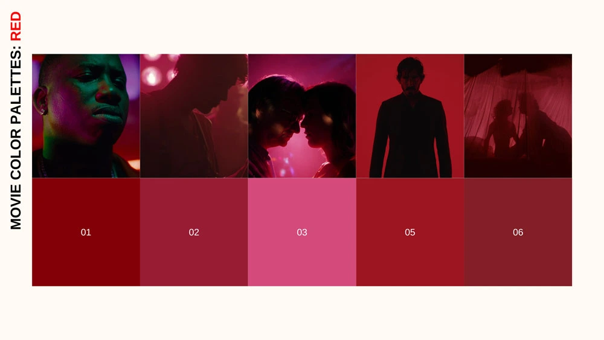
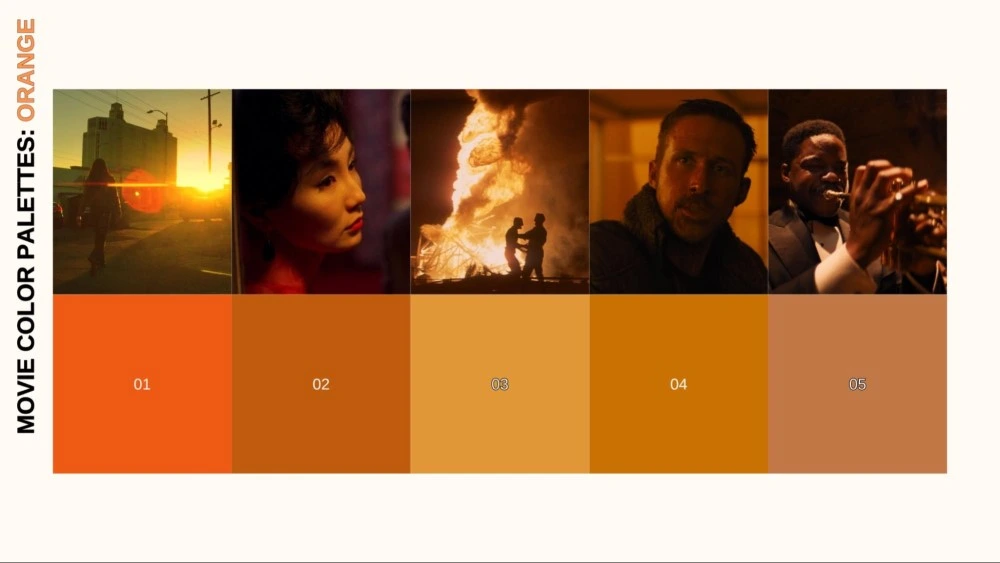
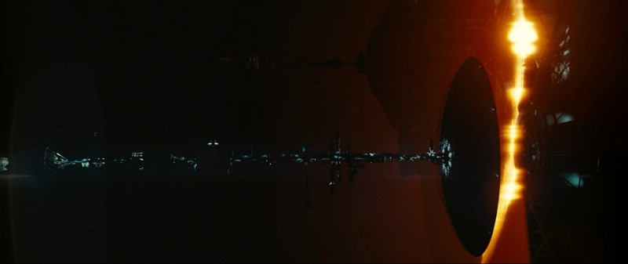
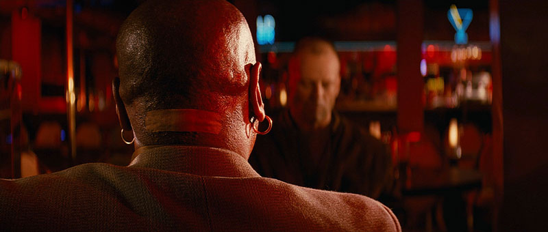
Meaning
A set of priniciples that combine science and art to understand how colors interact, mix, and affect human emotions and perceptions.
The colors a filmmaker chooses aren't just aesthetic decisions. They're storytelling decisions. They tell us who a character is, what a world feels like, and where the emotion of a scene is headed. Color triggers emotional and psychological responses that are almost involuntary. In general, warm tones like reds, oranges, and ambers tend to feel energetic, intimate, or dangerous depending on context. Cool tones, like blues, greens, grays, can read as calm, melancholy, clinical, or otherworldly. Within each color are a multitude of hues you can break down even further to specifically hone in on the exact level of emotion you're seeking.
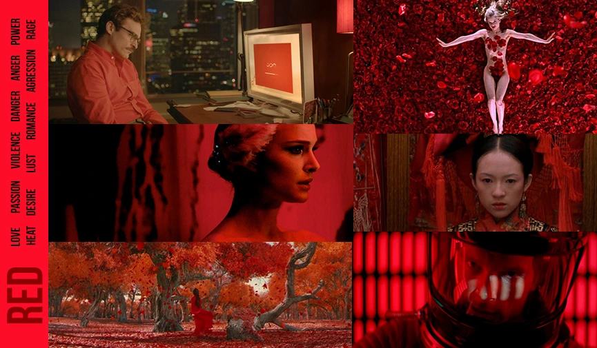
- Red
- Love
- Passion
- Violence
- Danger
- Anger
- Passion
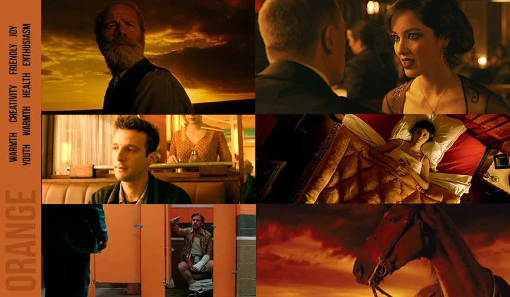
- Orange
- Warmth
- Sociability
- Friendship
- Happiness
- Exotic
- Youth
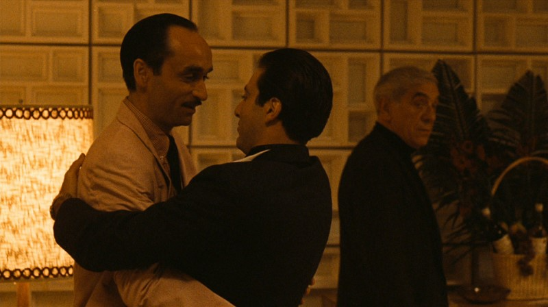
The Godfather
In The Godfather (1972) and Part II (1974), orange evokes tradition and familial warmth, yet often serves as a deceptive facade, masking the underlying corruption, darkness, and simmering violence inherent in the Corleone world.
Dune
In Dune (2021), the vast desert landscapes of Arrakis are rendered in harsh, oppressive yellows and oranges. It emphasizes the planet’s deadly heat, unforgiving nature, and the preciousness of its resource, the spice.
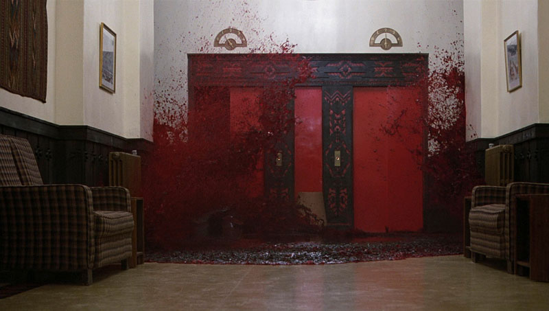
The Shining
Stanley Kubrick, a master of visual symbolism, frequently employed red to create a sense of unease and impending doom. In The Shining (1980), the crimson flood of blood that bursts from the elevator doors is a shocking and visceral image that instantly establishes the Overlook Hotel’s horrific past.
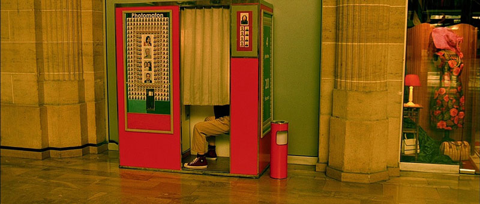
Amélie
Amélie Poulain, is often associated with the color red. Her apartment is filled with red accents, wallpaper, red lamps, and knick-knacks. This use of red reflects her vibrant inner world. It shows her quirky personality and depicts her capacity for finding joy in the mundane.
Important Examples
The best way to understand is to see how it's used in major movies and TV shows.
Films like La La Land, Schindler's List, and The Matrix demonstrate how color theory can shape meaning, from vibrant hues expressing emotion and ambition, to stark black-and-white realism punctuated by symbolic color, to contrasting tints that separate illusion from reality. Other films, such as Mad Max: Fury Road and Moonlight, similarly use bold palettes and shifting tones to reflect character identity, environment, and emotional transformation, showing how color can act as a powerful storytelling tool beyond dialogue.
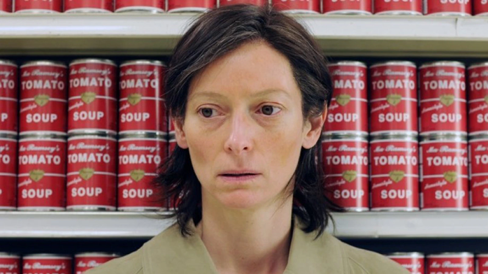
We Need to Talk About Kevin
Lynne Ramsay
We Need to Talk About Kevin uses the color red as a pervasive, visceral symbol of guilt, violence, and foreboding.
Watch Movie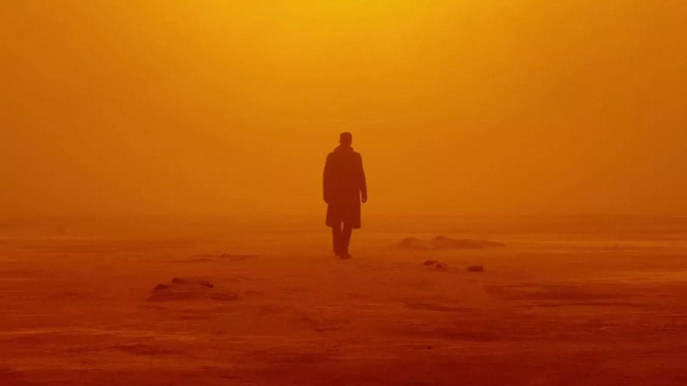
Blade Runner 2049
Denis Villeneuve
In Blade Runner 2049, the pervasive red and orange tones symbolize radioactive decay, caution, and transformation, particularly within the irradiated Las Vegas landscape.
Watch Movie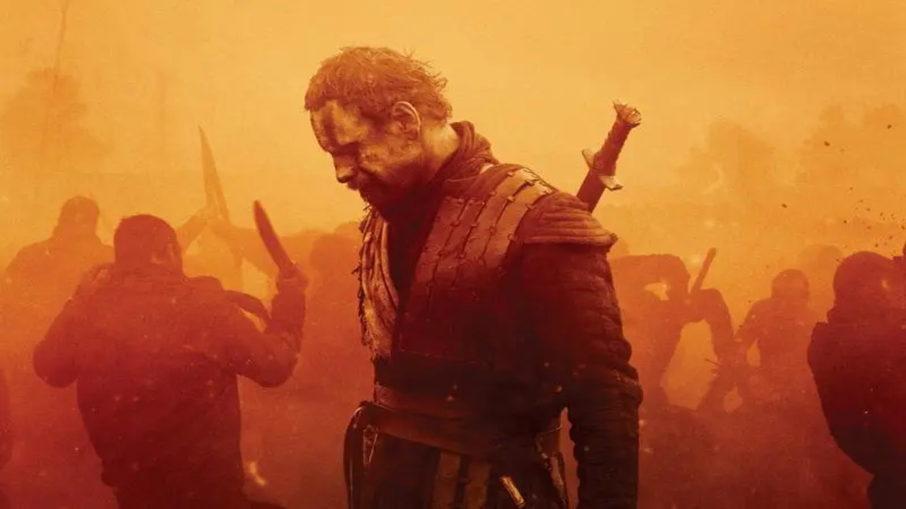
Macbeth
Justin Kurzel
Kurzel uses a high-contrast orange to symbolize fire, blood, and the characters' descent into hellish psychological torment. This intense, often hazy, or smoke-filled orange glow contrasts with the bleak blues of the early scenes.
Watch Movie